カイノミとサーロインステーキを低温調理する
カイノミとサーロインステーキを低温調理する
こんにちは、肉テロの時間です。今回は前回で予告したとおり、別に低温調理をしないでも絶対うまい肉をanovaで低温調理するとどれだけ満足感を得られるのか？を検証したい。
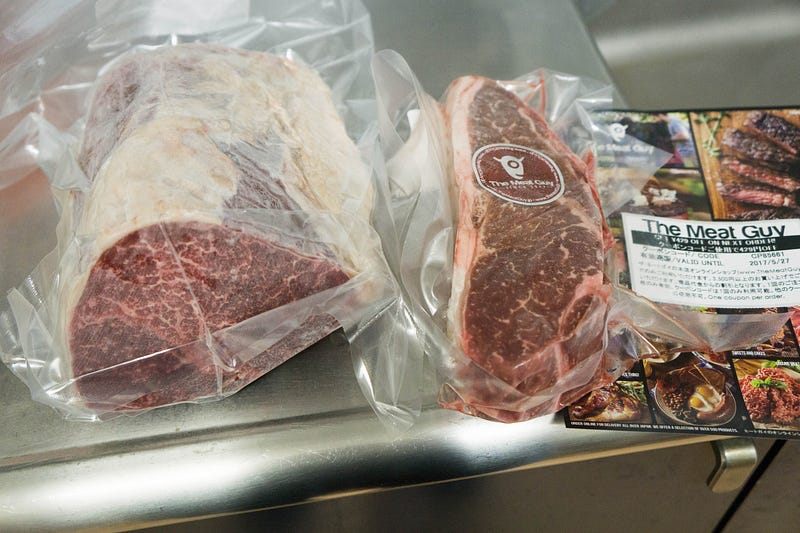
今回はサーロインステーキ 400gと カイノミ1kgでいざ、勝負。
New: Anova Precision Cooker - WIFI 2nd Gen (900 Watts)ほかホーム＆キッチン, 家電, キッチン家電, コンロ・クッキングヒーター, 卓上IHクッキングヒーターが勢ぞろい。ランキング、…amzn.to
前回はこちら
まずはカイノミ。
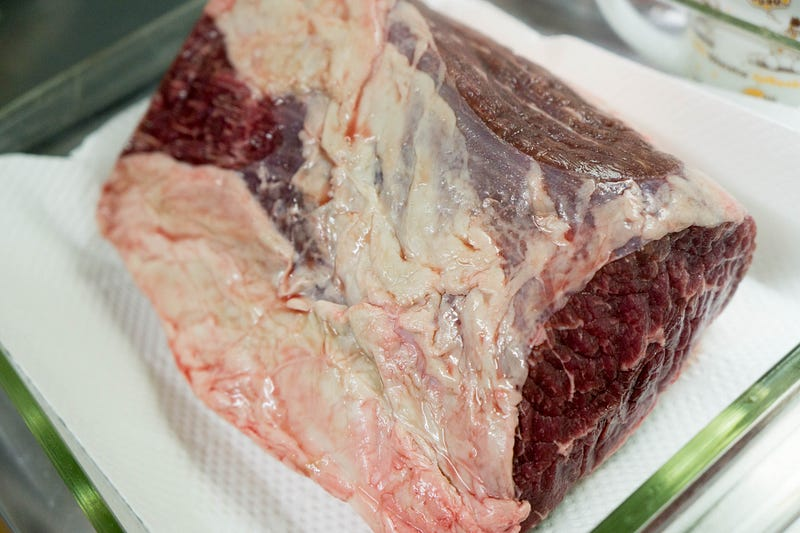
カイノミってはシュラスコでいうFraudinhaという部位で、日本では昔はあまり見る事がなかったんだけど、最近市民権を得てきたのだろうか？ともあれ、自分はわりと子供の頃からシュラスコでよく食べてたので大好きな部位だ。
赤身の肉で、良く焼けばホロホロ、レア気味ならジューシーで噛み応えのある部位。味もまさに牛肉！という感じ。
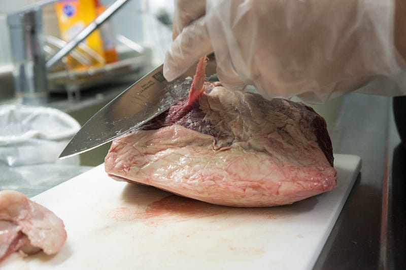
今回は赤身の肉を楽しむ日なので、脂とまわりの筋っぽいところは全て除去。
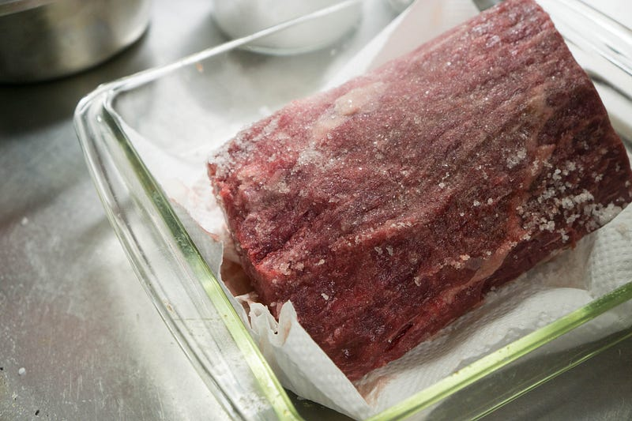
塩して放っておく事20分。
ここ数回ステーキを焼く前に低温調理をしてきてわかったことがひとつある。普通にステーキを焼いても、前持ってふっておいた塩は肉汁や脂のせいでそれなりに流れてしまうので、その分を踏まえて塩をふらないといけないのだが、低温調理をすると肉汁にまわりの塩が全部…とは言わないまでもかなり持って行かれてしまうので、後でもう一度塩をするか、ソースが必要になる。
今回は焼くものにしてはきつめに塩をした上で、グレイビーソースもどきをつくる。
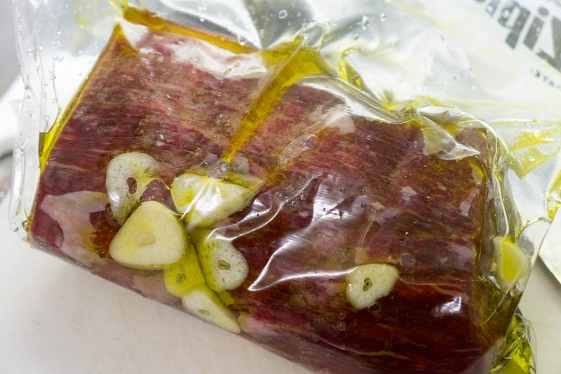
脂を全部除去してしまったので、罪滅ぼし（？）としてオリーブオイルを入れて加熱。ニンニクはなんとなく入れてみたが、結果的には肉にはあまり香りが移らなかった。
この人は54.5℃で2時間。温度や時間とかはこのサイトを横目で参考にしつつ自己責任で調整した
Steak is one of the most popular foods to cook for first-time sous-vide enthusiasts, and with good reason. It takes all…www.seriouseats.com
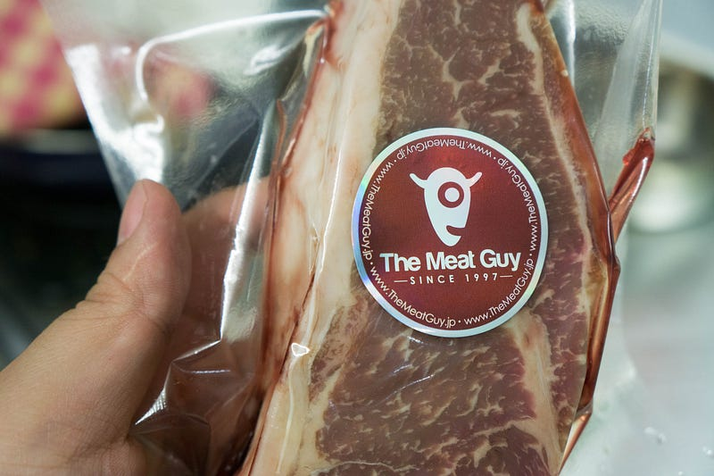
次、サーロイン。
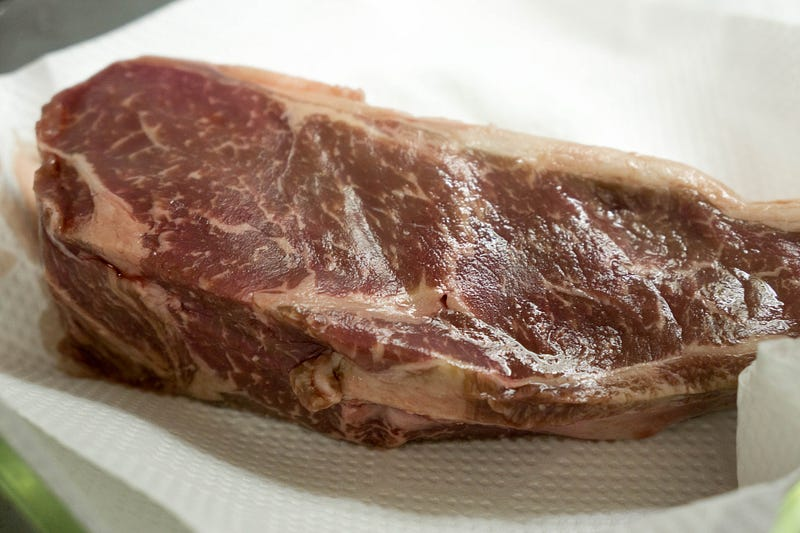
といっても、大してやることない。塩して20分おいて、パックして。この人は同じ温度で1時間やるので、時間差で投入。
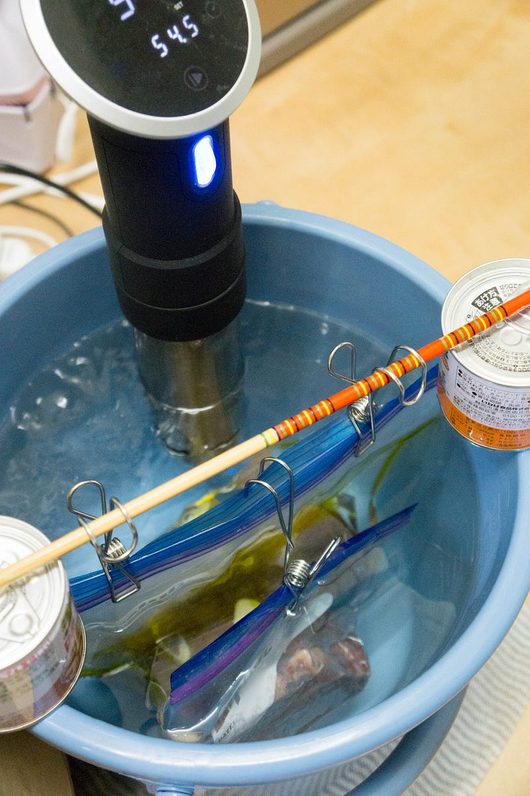
肉の下に水を回流させるには高さが足りなかったのでインプロバイズしました。
できあがったらいつもの「どう見ても不味そうな肉」の光景を楽しみます。
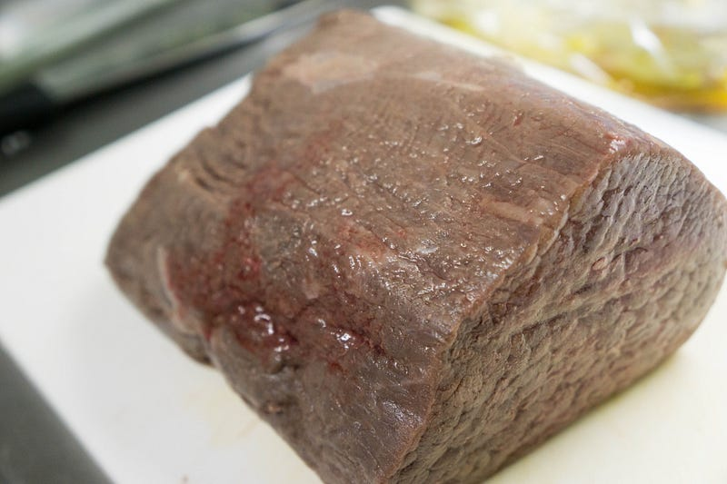
カイノミ。
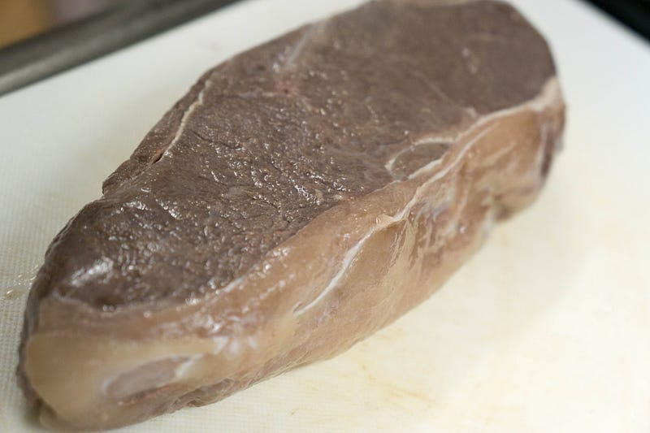
サーロイン。
高温の油で一気に焦がす。
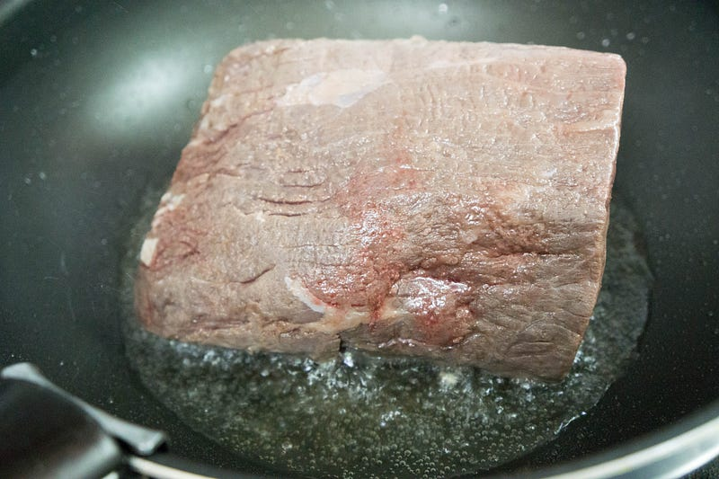
焦げるとこう。
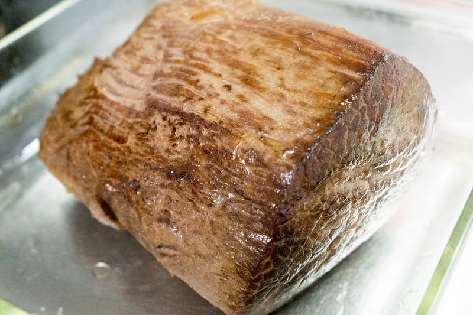
切ると、こう
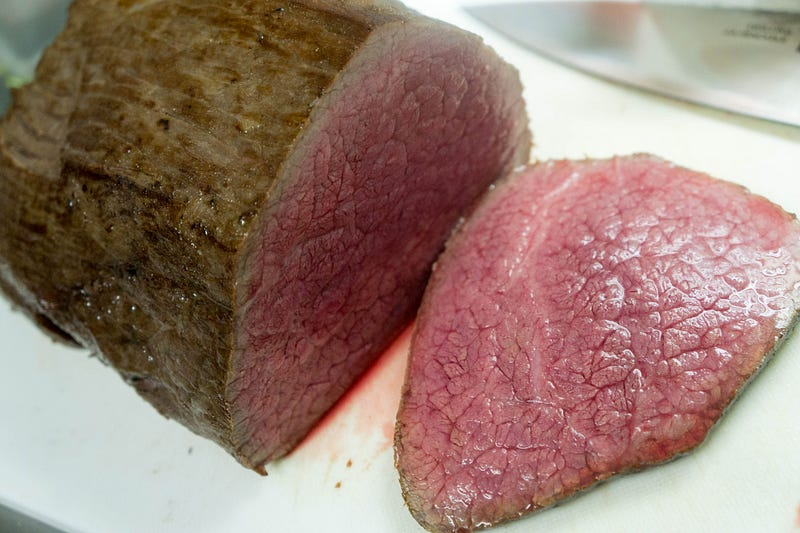
ひゃあああああああああああああ！！！！！！！！最高じゃねぇか！
つづいてサーロイン…と思ったけど、エキサイトしてて焦がすあたりの写真がなかった。ともあれ、こちらも同じようにガッとやってグッとするとこうなる。
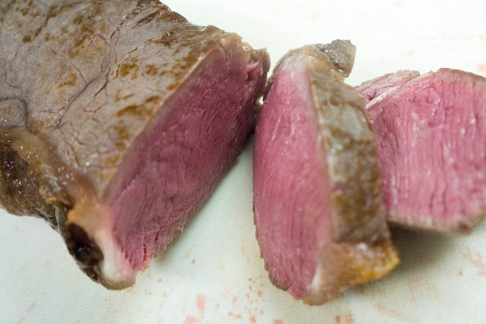
なんということだ。ナイスだ！ナイスな色だ！しかも中身が温かい！この完成度はフライパンやグリルだけでやるのは難しいぜ…
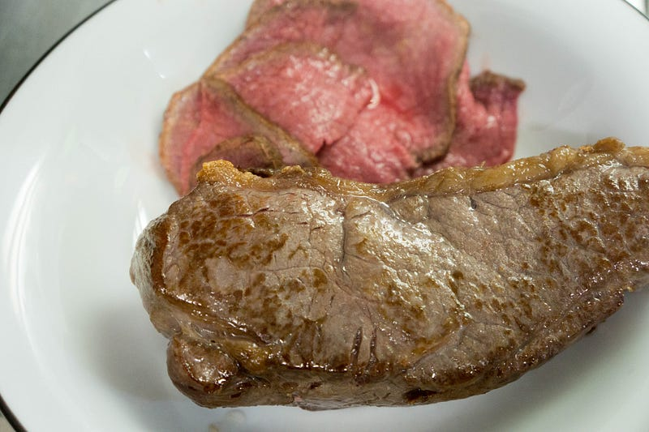
合体。
この後、写真をいくつか撮ったけど、カメラを床に落とした際にメモリカードだけはずれてて一切記録されていなかった。悲しみである。先に書いた通り、グレイビーソースも作ったのだが、一切に記録に残っていなかった。
感想としては、カイノミが最高にジューシーでうまかった。グレイビーソースも正解。サーロインはちょっとこのカットに筋が入ってて微妙な感じであった。が、かなり美味しくできてた。
「高い肉で低温調理やる意味はあるのか？」の答えは「ある」。味は正直低温調理しないでも、自分の肉焼き技術の全てを投入して同じくらいのものができるだろう。anovaで前持って低温調理することによって得られる柔らかさも、カイノミのようなブロックならまだわかるが、ステーキだとそこまでの差はでない（出すためにはもっとガッツリ時間をかける必要があるだろう）。
しかし、なんと言ってもanovaを使うと簡単なんだよ…！ピッピって設定したらなんかちゃんと火が通ってるのだもの… なんで、高い肉を買った時に失敗したくない！そのために2時間前から支度をし始める余裕もある！って時に使うと最高だと思われる。
とりあえずこれでanovaでやりたかったことは全てやった気がするので、このシリーズはしばらくは書かないかもしれない。しかし来月頭に BBQがあるので、カイノミは前持って処理しておいてから持って行きたいと思っている。その際はレポートする…かも。